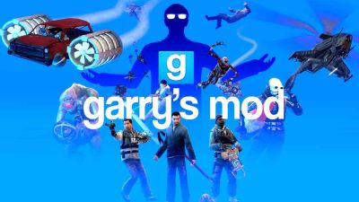

My Favorite Games
Here's a list of a few of my favorite videogames growing up along with a description of each.
League of Legends
League of Legends is a popular multiplayer online battle arena (MOBA) game developed by Riot Games. It features
a competitive environment where players work together in teams to defeat their opponents. The game is known for
its rich lore, diverse champions, and competitive gameplay.
Counter-Strike: Global Offensive

Counter-Strike: Global Offensive (CS:GO) is a first-person shooter game developed by Valve. It is known for its
strategic gameplay, precise shooting mechanics, and competitive scene. Players engage in team-based matches,
with one team trying to complete objectives while the other team attempts to stop them.
Garry's Mod

Garry's Mod, often abbreviated as Gmod, is a sandbox game developed by Facepunch Studios. It allows players to
create and manipulate objects and characters in a physics-driven environment. Gmod is known for its modding
community, which has created a wide variety of user-generated content and game modes.